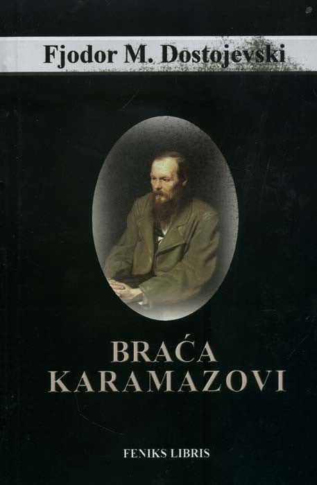
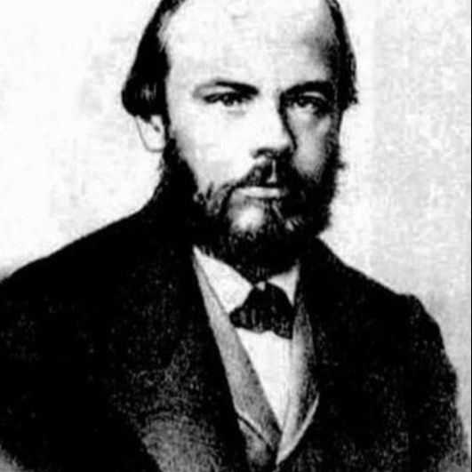

| 1 |
Braća Karamazovi |
Fjodor M. Dostojevski |
Dostupna |
Braća Karamazovi posljednji je roman ruskoga genija Fjodora Mihajloviča Dostojevskoga, koji je dovršio nepuna tri mjeseca prije smrti. Utjecaj ovoga romana, koji se smatra njegovim najvećim djelom, ne prestaje slabiti od njegova objavljivanja. Upečatljiva, snažna promišljanja o vjeri, smislu života, ljubavi i moralu duboko prožimaju Braću Karamazove, kao i niske strasti, pohlepa, tuga, ljubomora i humor. Nakon što je razvratni vlastelin Fjodor Pavlovič pronađen mrtav, život trojice njegovih sinova nepovratno se mijenja: Mitja, njegov prvenac, i sâm strastvena duša obuzeta zemaljskim zadovoljstvima, odmah pada pod sumnju za ocoubojstvo.
|
 |
 |
|